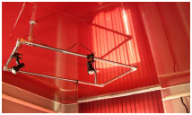

О потолках
Цвета и фактуры
Фотогалерея
Вопросы
Цены
Новости:
Работаем без выходных
Дополнительня услуга:
Гипсокартонные конструкции любой сложности
Скорость:
Оперативный замер
Монтаж 2-3 потолка в день
Качество:
Чистый монтаж
Гарантия на потолки- 12 лет
|
|
НАТЯЖНЫЕ ПОТОЛКИ ИЗ ПЛЕНКИ ПВХ

Для изготовления натяжных потолков в настоящее время используются два материала: поливинилхлоридная (ПВХ) пленка и полиэфирная ткань. Первая используется в абсолютном большинстве натяжных потолков. Пленка достаточно эластична при комнатной температуре, выдерживает давление 1000 Па. При нагревании выше 65 0С эластичность материала возрастает, и он хорошо поддается деформации, растягиваясь, как тонкая резина. Последующее охлаждение до комнатной температуры, восстанавливает изначальную упругость пленки. Это свойство материала и используется для установки натяжного потолка. Но в тоже время ПВХ не является морозостойким материалом. Поливинилхлоридная пленка становится жесткой и хрупкой, когда столбик термометра опускается ниже 0С, правда разрушаться пленка начинает только при морозе ниже - 40С. ПВХ пленка абсолютно водонепроницаема, благодаря этому в случае протечек натяжные потолки (выполненные по гарпунной технологии) выдерживают до 100 литров воды на 1 м2. После удаления воды потолок восстанавливает свое натяжение. Удалить воду, можно открыв отверстие для светильника, если же встроенных светильников нет, то специалисты обычно отгибают угол покрытия, выпускают воду, а затем устанавливают потолок на место. Натяжной потолок из виниловой пленки не боится ударов и не трескается, легко моется. И, кроме того, соответствует самым строгим международным требованиям экологии и пожаробезопасности - не горит (плавится), не выделяет токсичных веществ. Пленку для натяжных потолков выпускают шириной от 1,3 до 2 м, если же требуется большая ширина, то полотнища легко соединяют между собой сваркой с образованием едва заметного шва. Мы гарантируем надежность швов ПВХ пленки и конструкций в течение 10-12 лет.
Поверхность плёнки может быть разной: лакированной или матовой, с имитацией замши или мрамора, зеркальной, полупрозрачной и перфорированной, любых расцветок, т.к. материал хорошо прокрашивается (пленка не красится, она приобретает свой цвет в процессе производства) на всю толщину. Натяжные потолки из пленки ПВХ можно мыть с применением любых моющих средств, но только мягкой тряпочкой. Царапать натяжные потолки щеткой ни в коем случае нельзя - натянутая пленка может порваться.
|
|

 433316249
433316249